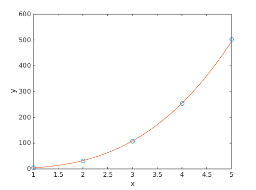

Contents
Fitting a line ()
Let's say we have the following data: (x and y can represent, for example, values from an experiment):
x = [1, 2, 3, 4, 5]; y = [3.2, 5.4, 7.1, 8.8, 10.2];
Let's plot it:
plot(x, y, 'o'); xlabel('x') ylabel('y')
Looking at this data, you can imagine a line that "best fits" the data. We will use polyfit to get the equation of that line.
The equation of any line is of the form , where and are some coefficients. Here's how to use polyfit to get those coefficients for a line:
coeff = polyfit(x, y, 1); a = coeff(1); b = coeff(2);
Remember, polyfit returns the "higher-order" coefficient first, i.e., the one that is "attached to " in this case.
Let's look at our coefficients:
disp(a) disp(b)
1.740000000000000 1.719999999999999
So we know that the equation of the line is . Let's plot this line over the original data:
x_line = 1:0.1:5; y_line = a*x_line + b; hold on plot(x_line, y_line) hold off
As you can see, our line fits the data quite well.
Fitting power-law data ()
Now let's work with this data:
x = [1, 2, 3, 4, 5]; y = [4.2, 32.1, 107.4, 254, 501.6]; plot(x, y, 'o'); xlabel('x') ylabel('y')
This time, it looks like a curve of some kind might be a better fit. We'll try a "power function", of the form , where again, b and a are some unknown coefficients.
This time, we'll have to use polyfit a bit differently: we'll take the log of both the x and y data. And we'll also have to take the exp of the second coefficient returned.
coeff = polyfit(log(x), log(y), 1); a = coeff(1); b = exp(coeff(2));
If we do that, a and b correspond to the coefficients of the power law. We can plot the curve over the original data:
x_curve = 1:0.1:5; y_curve = b*(x_curve.^a); hold on plot(x_curve, y_curve) hold off
... and we'll see that it's a good fit. I haven't explained why we do this log and exp business. That's explained in some detail in my notes for Lecture 2.
Fitting exponential data ()
Finally, we can have data that exponentially decays (or increases).
x = [1, 2, 3, 4, 5]; y = [22.3, 4.80, 1.21, 0.25, 0.055]; plot(x, y, 'o') xlabel('x') ylabel('y')
An exponential function is of the form , where and are coefficients we need to determine. This time too, we'll have to use polyfit a bit differently, the difference from the power law being that we'll take the log of the y data only:
coeff = polyfit(x, log(y), 1); a = coeff(1); b = exp(coeff(2));
And again, a and b correspond to the coefficients from the exponential law; plotting this:
x_curve = 1:0.1:5; y_curve = b*exp(a*x_curve); hold on plot(x_curve, y_curve) hold off
Again, if you're curious about why we use log and exp like this, look at my notes from lecture 2, and you will be able to work it out.